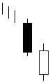

تحلیل تکنیکال
الگوهای کندل استیک ها
الگوهای ادامه دهنده نزولی
Bearish In Neck Line

این دو الگو نیز شباهت بسیاري به الگوهاي ادامه دهنده قبلی دارند با این تفاوت که قبل از شمع اول شکاف دیده نمی شود اما
در فاصله شمع اول و دوم حتما شکاف وجود دارد و قیمت پایانی شمع دوم در محدوده بدنه شمع اول بسته نمی شود این الگو
نیز براي ادامه روند قابل اطمینان می باشد.